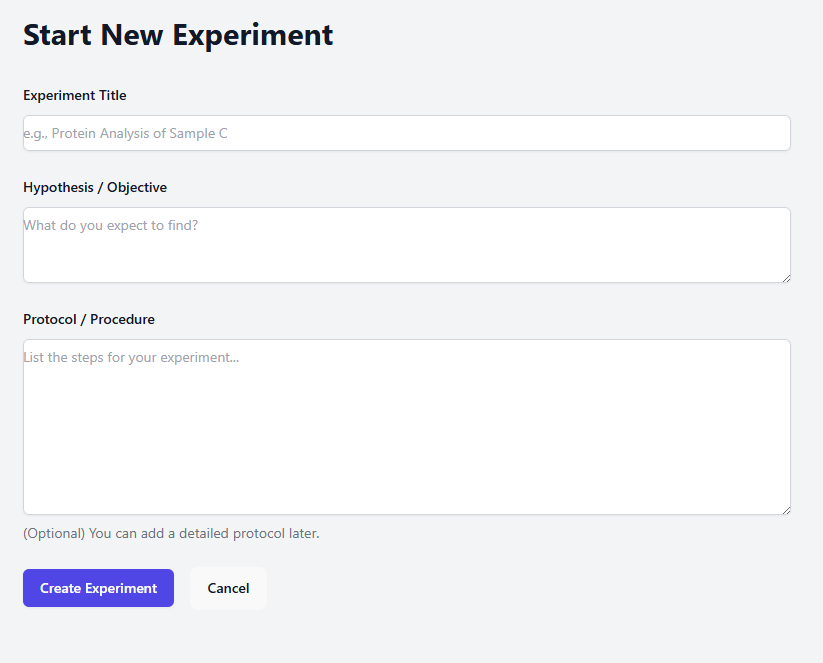
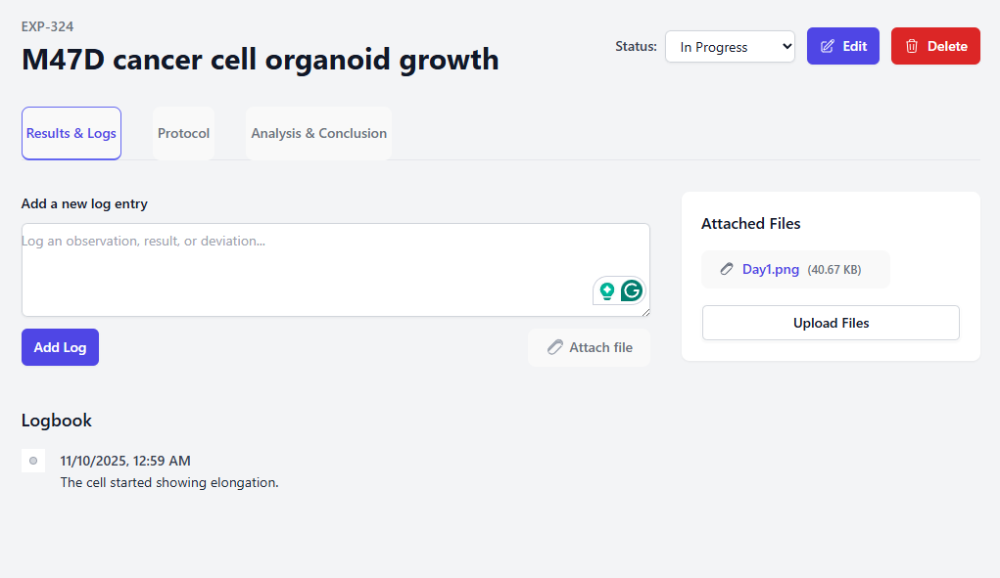
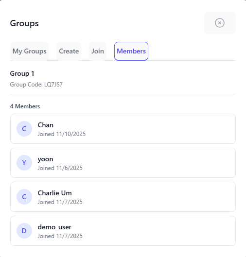

The Problem
In many research environments, experimental data is scattered across multiple spreadsheets. This 'spreadsheet-based method' is often manual, error-prone, and makes it incredibly difficult to query, analyze, or collaborate on data effectively. I saw a need for a centralized, reliable system that researchers could trust.
My Solution
To solve this, I designed and built the Lab Experiment Tracker, a full-stack web application. It provides a clean, simple web interface for researchers to log experiment parameters, upload results, and track progress. The entire system is backed by a SQLite database, ensuring data integrity and making analysis simple.
Key Features
Writing new experiments
Create and initialize new experiments with an intuitive interface. Organize experiments by date, status, and project type for easy tracking and management.
Logging experimental data
Efficiently log and update experimental data in real-time. Track parameters, results, and observations with a clean, organized interface that replaces clunky spreadsheets.
Group membership
Share experiments with your lab members. Collaborate effectively by viewing team progress and sharing insights across your research lab.
View member experiments

Browse and filter experiments from all group members. Collaborate effectively by viewing team progress and sharing insights across your research lab.
Tech Stack
Backend
Frontend
Database
Deployment
Potential Impact & Value
This system can help researchers track their experiments and data more efficiently, allowing them to focus on analysis and interpretation of data instead of manually tracking data in spreadsheets.
Project Links
Project is still in development. Please check back soon for updates.